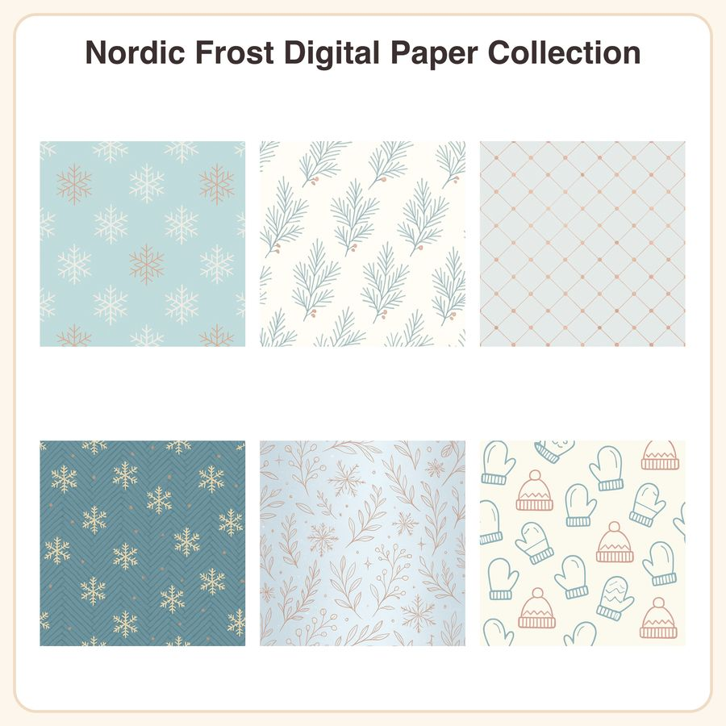

$4.99
View on EtsyFresh winter paper that skips the red-and-green cliché! Nordic Frost is a set of 6 seamless, flat-vector minimalist patterns in an icy blue, soft grey, cream, and muted rose gold palette—perfect for planner spreads, cardmaking, scrapbooking, and Canva projects that need something wintry but not Christmas-red. What you get (12 files total): • 6 seamless patterns as 3072x3072px JPEGs (12x12in @ 300dpi, print-ready) • 6 matching repeatable PNG tiles for digital design use Designs included: 1. Icy-blue background with scattered six-point minimalist snowflakes 2. Cream base with thin grey fir-branch sprigs in a diagonal repeat 3. Muted rose-gold dot lattice over pale grey, frosted-glass feel 4. Dusty blue herringbone texture with tiny embroidered-look snow crystals 5. Soft gradient from slate blue to white, mimicking a frosted window pane 6. Cream background with small outlined mitten and knit-hat icons How to use: Open the JPEGs in any design program (Canva, Photoshop, Procreate, etc.) for print projects like planner covers, gift wrap, cards, and stationery. Use the PNG tiles to fill backgrounds seamlessly in digital layouts, websites, or social media graphics. License: For personal use and small business commercial use (up to 500 finished units sold). Please do not resell, redistribute, or share the digital files themselves as-is or as a stock/design set. Honest disclosure: These patterns were designed by our shop using digital vector tools with the assistance of AI tools to help develop the motifs and color palette. All files are curated and finalized by us before being offered in our shop. Instant digital download—no physical item will be shipped.